선택할수록 펼쳐지는 이야기
비율 수학과 모험책 만들기 📖
We had a wonderful start to our shortened week and to the second session of summer camp. The morning moved from mathematical thinking to imaginative writing: first, students explored ratios and rates; then they began designing stories in which every choice sends the reader somewhere new.

➗ Ratios and Rates Compare · calculate · explain
Half of the morning was devoted to math. Students learned the vocabulary behind ratios and rates and practised describing relationships between quantities. We compared part to part, part to whole, and one quantity per unit, making sure that each calculation could also be explained clearly in words.
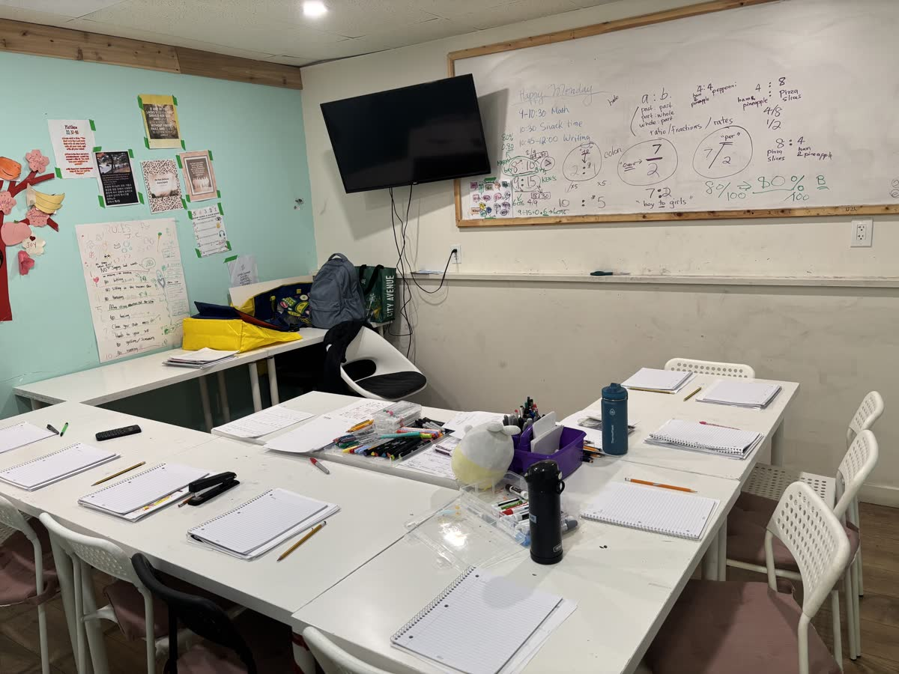
✍️ Choose Your Own Adventure One story, many paths
The second half of the morning became a literacy workshop. Each student began writing and designing a Choose Your Own Adventure book. At the end of every page, the reader must make a decision. Each choice points to a different page and continues the story along a new path.
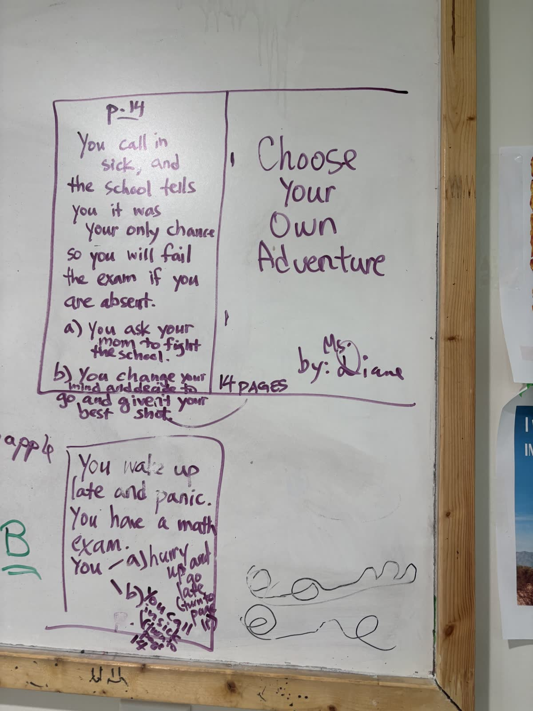
This format asks young writers to think beyond a single beginning, middle, and end. They need interesting characters and settings, but they also need logic: every branch has to connect, every page number has to lead somewhere, and every decision must matter to the reader.
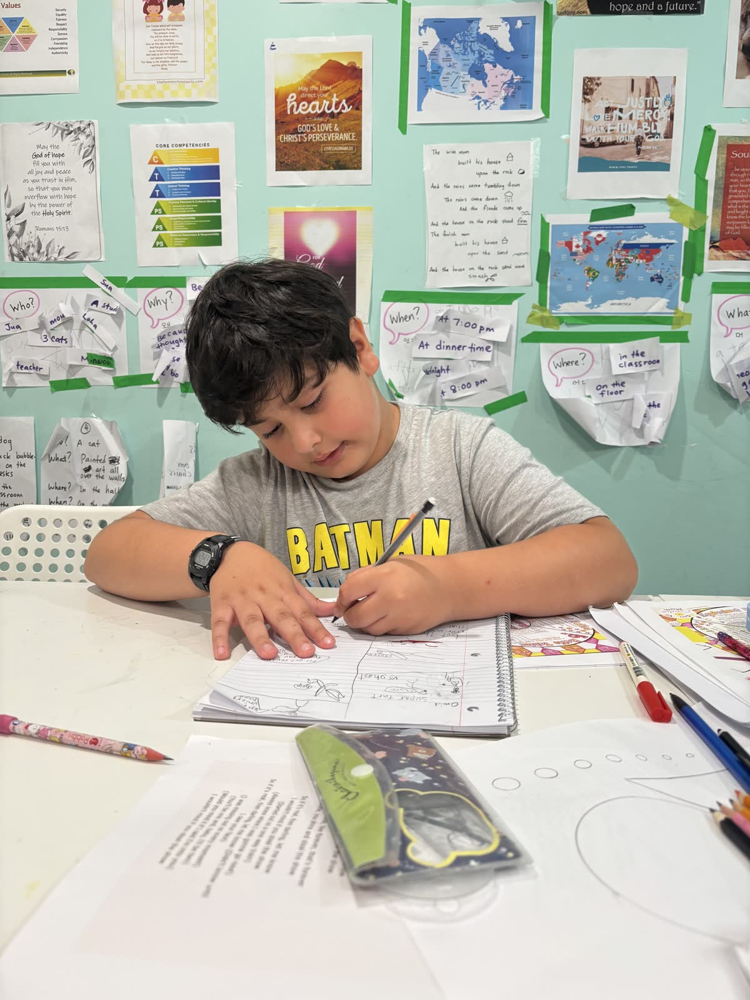
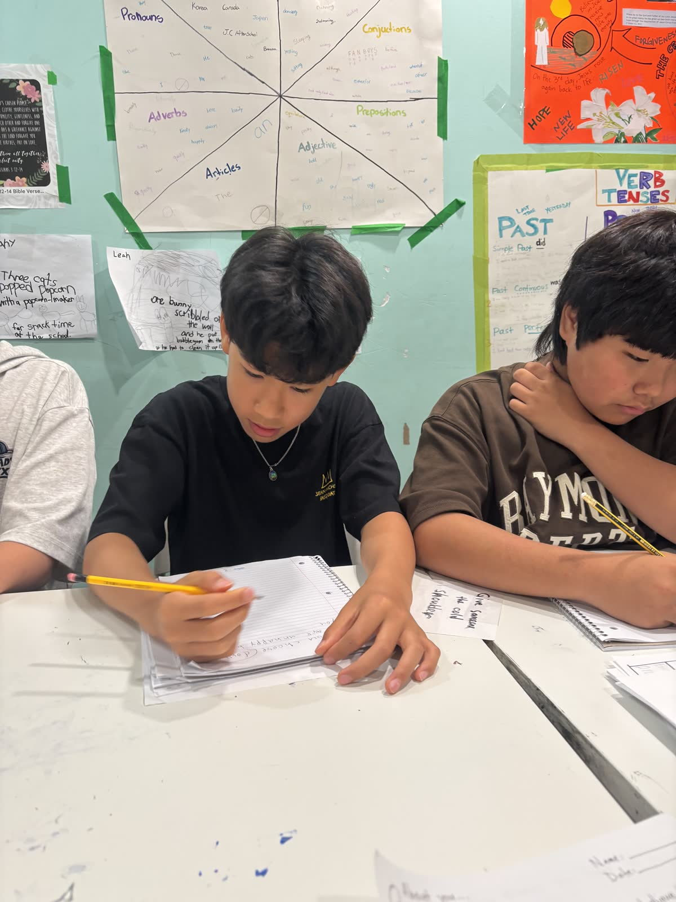

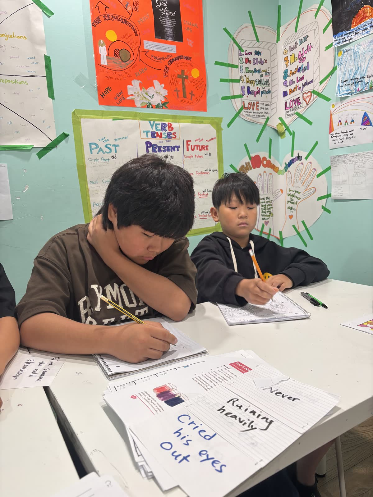
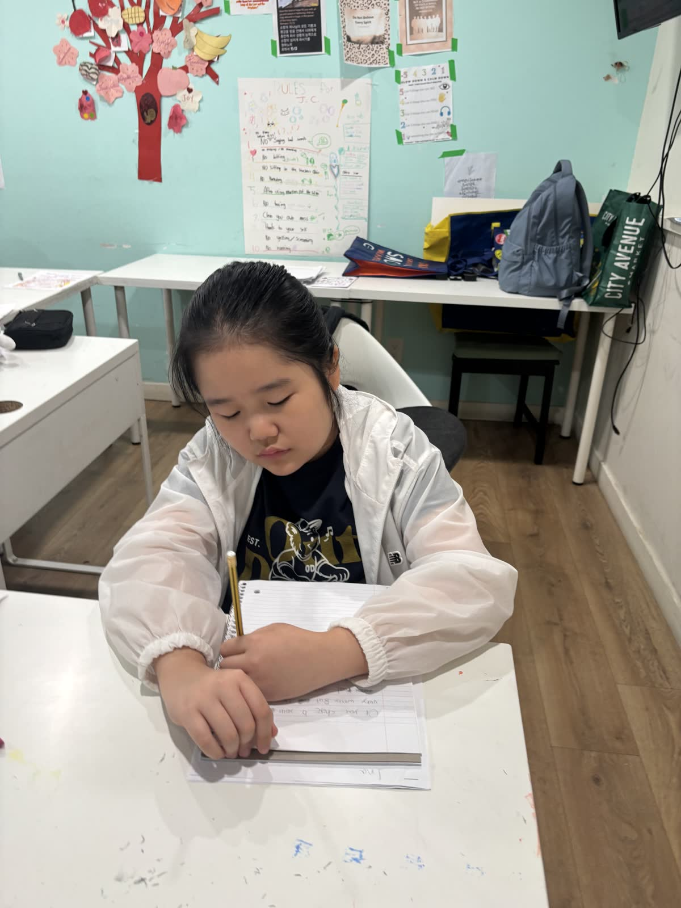
“The students have started their literacy project for the week, writing and designing a ‘Choose Your Own Adventure’ book, where at the end of each page, the reader has to make a decision that will take them in a different direction.”
There was also time for quiet reading, giving students another way to notice how authors build scenes, introduce characters, and keep readers curious.
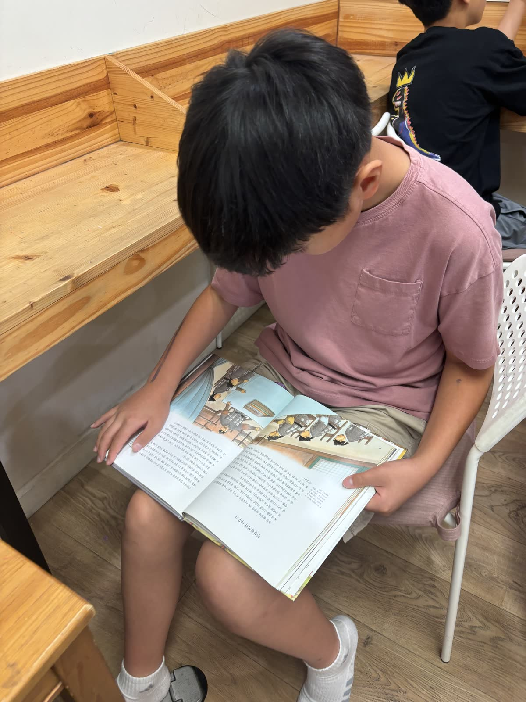
🍚 Lunch and a Garden Check Refuel · observe · grow
A warm Korean-style lunch gave everyone time to recharge. Rice, chicken, kimchi, and side dishes made a satisfying meal after a full morning of calculations and writing.
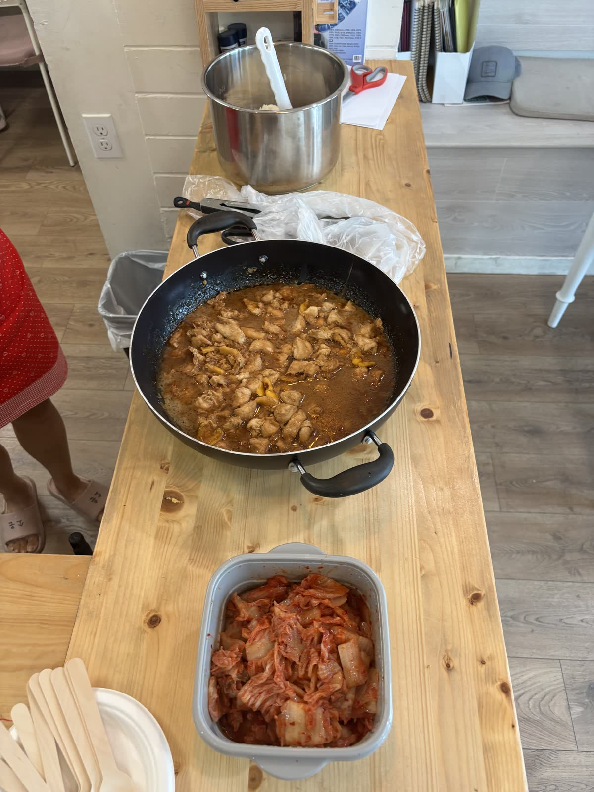
Outside, we checked on the garden and found green tomatoes growing well. Watching small changes from week to week makes the garden a simple but meaningful part of our summer routine.
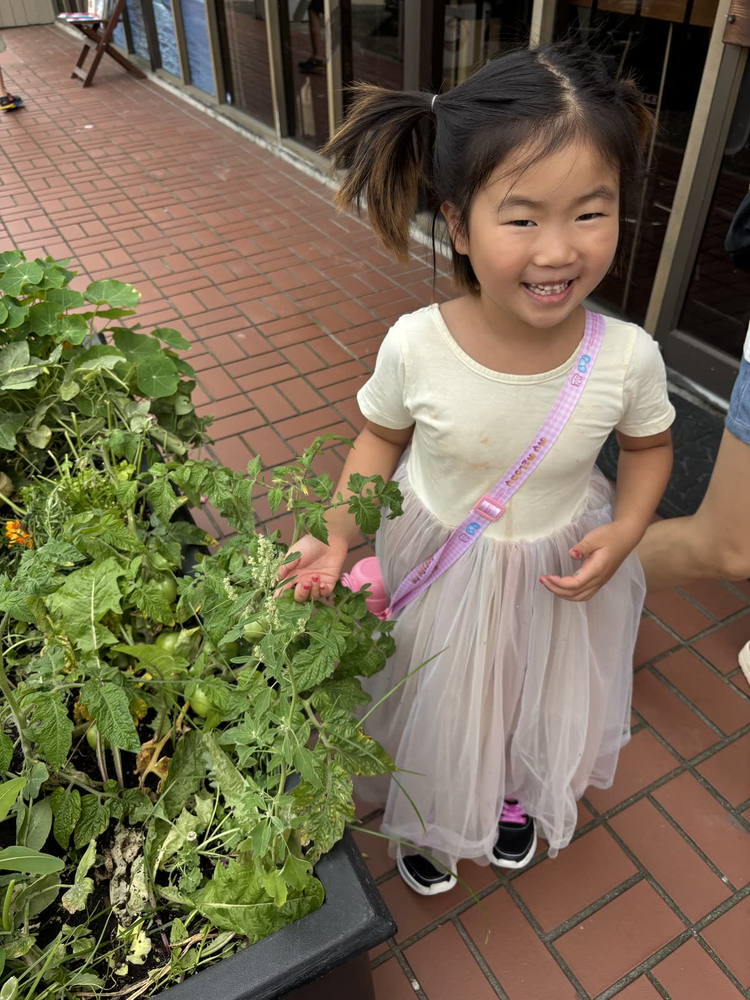
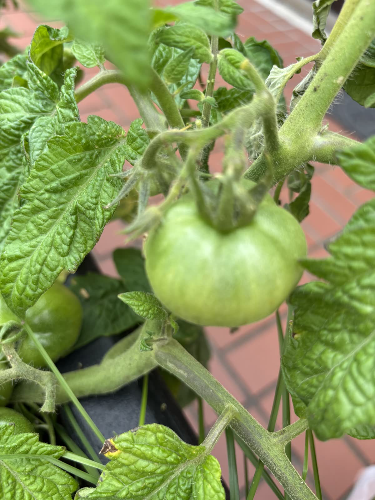
💦 A Refreshing Pool Afternoon Move · play · cool down
After the focused morning, the pool was the perfect place to move, play, and cool down. The children splashed, practised moving through the water, and enjoyed relaxed time together in the sunshine.
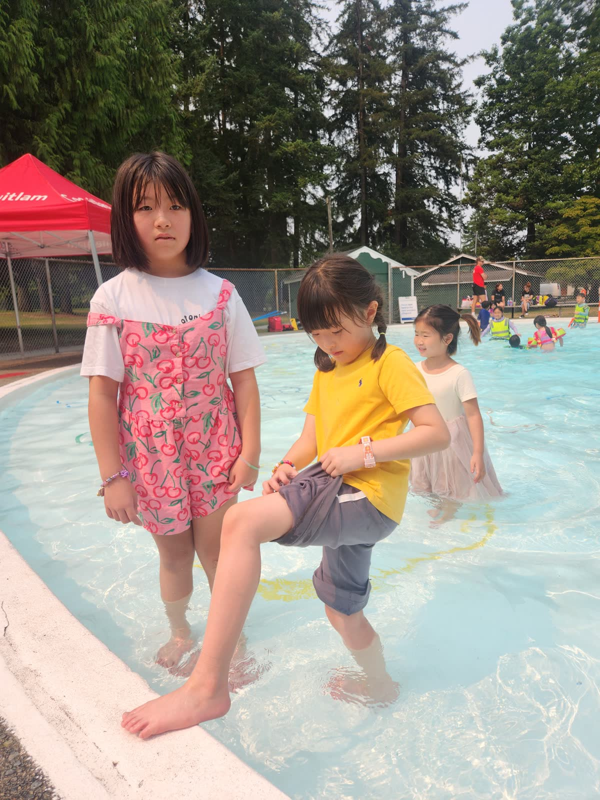
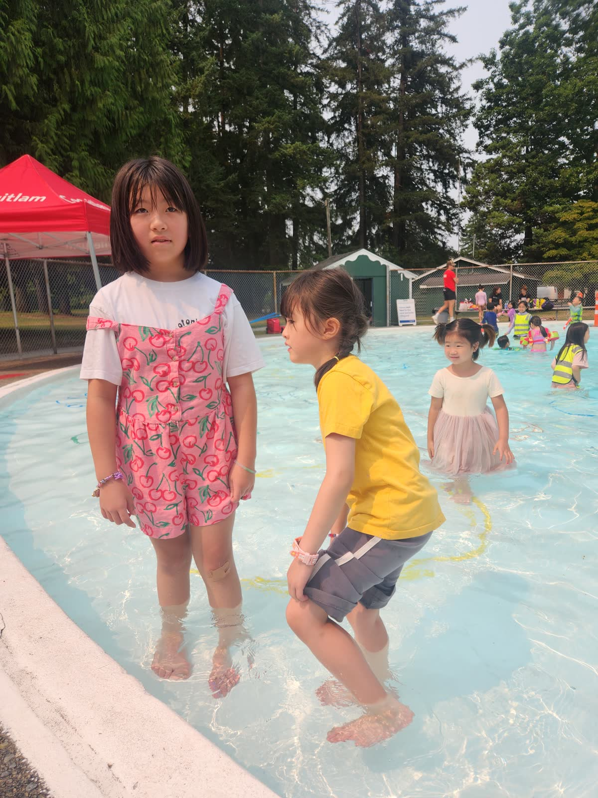
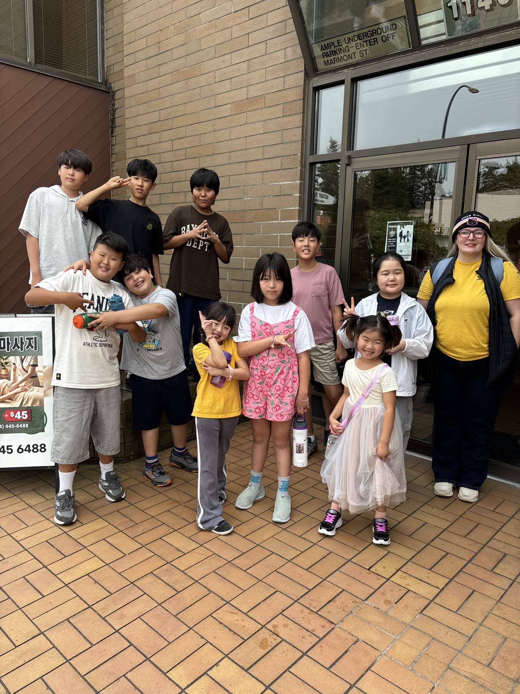
Today’s Growth
Students strengthened mathematical vocabulary through ratios and rates, then combined creativity, organization, and logical sequencing in their branching stories. It was a day of serious thinking, playful imagination, and a well-earned afternoon in the water.
We are excited to see where all of these stories lead—and which choices their readers will make next.